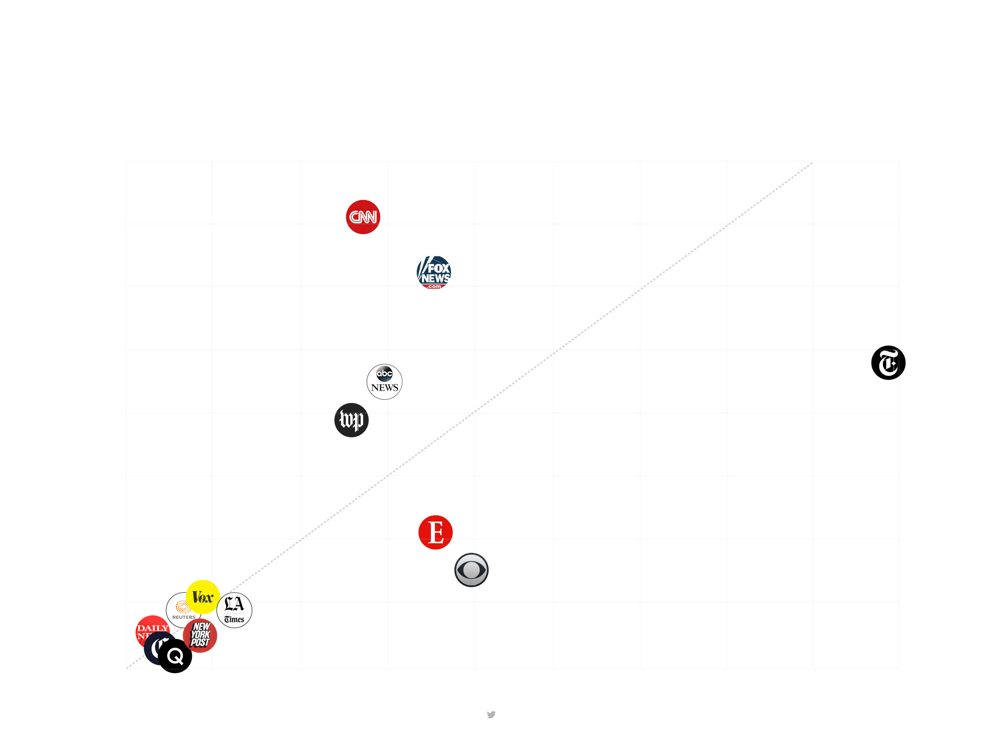

New York Times Twitter feed (August, 25, 2017).
We’re living in the world of social media domination over news distribution and information dissemination. If you’re a social media user, you most probably get your updates about your local communities or the latest global developments directly through the links your friends are sharing on their feeds or the groups and lists you both follow. You don’t even have to visit a news website home page anymore; sponsored ads or just the follow button you clicked on ages ago will bring you the latest posts directly on your feed.
The prevalence of social media on the way we are getting informed has spurred criticism about 'echo-chambers' creation, where everyone's beliefs are re-assured by being exposed to content coming from friends with similar views, and algorithm manipulation, as it's not exactly clear how social media decide which of the thousands links and posts shared every day we should see on our feeds. The recent fake news outbreak put the relationship between social media and news distribution under new pressure, as social networks (and search engines) were accused of neglecting to identify the issue and help tackle it promptly.
And while several analyses and studies have been made on the impact of social media on the ways readers receive, consume, and perceive news, one interesting aspect has been rather neglected; how many people are actually reading rather than just liking or sharing what goes in front of their eyes? How many people are forming their views and opinions from actually clicking through and delving into the details of a report they stumbled upon on their feed, instead of just sticking to the headline and the caption of a post or a Tweet for reaching to their conclusions?
Now, neglected might be a quite unfair word, since it's technically difficult to know exactly how many people have seen, interacted, and clicked-through news-related posts and Tweets, without having access to Facebook or Twitter metrics, or analytics of the news organisations that post on the social media.
However, one sweet work-around that issue - and possibly the only way we have to get some insights on the number of people that are clicking on links on social media - is utilizing the bitly's news organizations are using for posting their links on social media. bitly is an online tool that turns any URL to a short link, making it easier for embedding it on social media postings. bitly core service is offering analytics on the performance of each shared link, such as total clicks, what website these clicks came from, user location and so on. Although bitly monetizes its services through premium features offered to paying customers, still all the essential data we need for our experiment (total clicks, source) are publicly available.

Twitter users more likely to socialise with than actually read the news
Likes, retweets, and replies vs. click-throughs per 100 tweets with a bitly shortlink for major US news organisations.
Tweets for Tue, Aug 15th - Mon, Aug, 21st. Bitly analytics retrieved on Tue, Aug 22nd.
More socialising with the news
As shown in the graph above, Twitter followers of major US news organisations that use bitly's for sharing their content on social media seem slightly more inclined to 'socialise' with their news instead of actually read them. As 'socialising' we defined interactions (retweets, replies, likes) with a Tweet, and as reading we defined clicking-through the link shared in the a Tweet. The New York Times appear to have the following audience with the highest ratio between click-throughs and Tweet interactions, indicating a higher engagement with the actual news production. On the other hand, Washington Post, ABC News, Fox News and CNN appear to form a cluster of news organisations, whose Twitter followers tend more to like or retweet a post rather than actualy click-through and read it. Finally, a larger cluster is formed by media really close to the line that divides between followers that 'socialise' more and followers that read more. Publications like Vox, The Los Angeles Times, Quartz, have followers that are more or less equally likely to interact and to click-through their posts.
For this investigation, we only used a short span of time to calculate how many interactions and click-throughs each news organisation received. For a more complete picture, the investigation should be repeated in a wider timeframe. In order to draw a more accurate picture, we have controlled the number of total interactions and total clickthroughs for each organisation per 100 tweets posted that utilized bitly link sharing within the timeframe of our investigation. Another factor that to be taken into account and controlled against could be the number of followers each news organization has on Twitter, although interactions and clicks might be coming from users that don't follow the account of the given media, and are exposed to their Tweets through retweets or posts of their friends. Finally, a similar analysis should take into account a common practice of news organisation to re-post links during the day, either for providing followers with updates on a developing story, or for recycling successful or interesting stories aiming at reaching to users who might not have seen the post.
The 6 items with the most click-throughs on Twitter among the news organisation we analysed, were:
| Twitter Account |
Tweet |
Permalink |
Likes |
Retweets |
Replies |
Click-throughs |
| CBS News |
WATCH LIVE: Attorney General Jeff Sessions delivers speech on immigration in Miami |
https://twitter.com/CBSNews/status/897900482211049472 |
44 |
34 |
32 |
79,044 |
| The Economist |
Donald Trump is politically inept, morally barren and temperamentally unfit for office |
https://twitter.com/TheEconomist/status/898138032058114048 |
32,196 |
19,401 |
1,558 |
70,228 |
| CBS News |
We're praying "that in America that we will not allow the few to divide the many," VP Pence says of Charlottesville |
https://twitter.com/CBSNews/status/897866399284174849 |
187 |
87 |
204 |
46,091 |
| The New York Times |
Breaking News: President Trump told aides he’s decided to push out Stephen Bannon as chief strategist |
https://twitter.com/nytimes/status/898585843664691200 |
6796 |
5422 |
997 |
25,289 |
| ABC News |
Lincoln Memorial defaced with graffiti overnight; National Park Service is investigating and working to remove it. |
https://twitter.com/ABC/status/897527675912298496 |
319 |
559 |
206 |
22,800 |
| The New York Times |
Opinion: It's now clear that my optimism was unfounded. I can’t stand by this disgraceful administration any longer. |
https://twitter.com/nytimes/status/898264612352733185 |
11,347 |
5,120 |
1,029 |
22,286 |
The Lede 2017 at Columbia University.
Instructed by Soma, and Maryanne Murray.